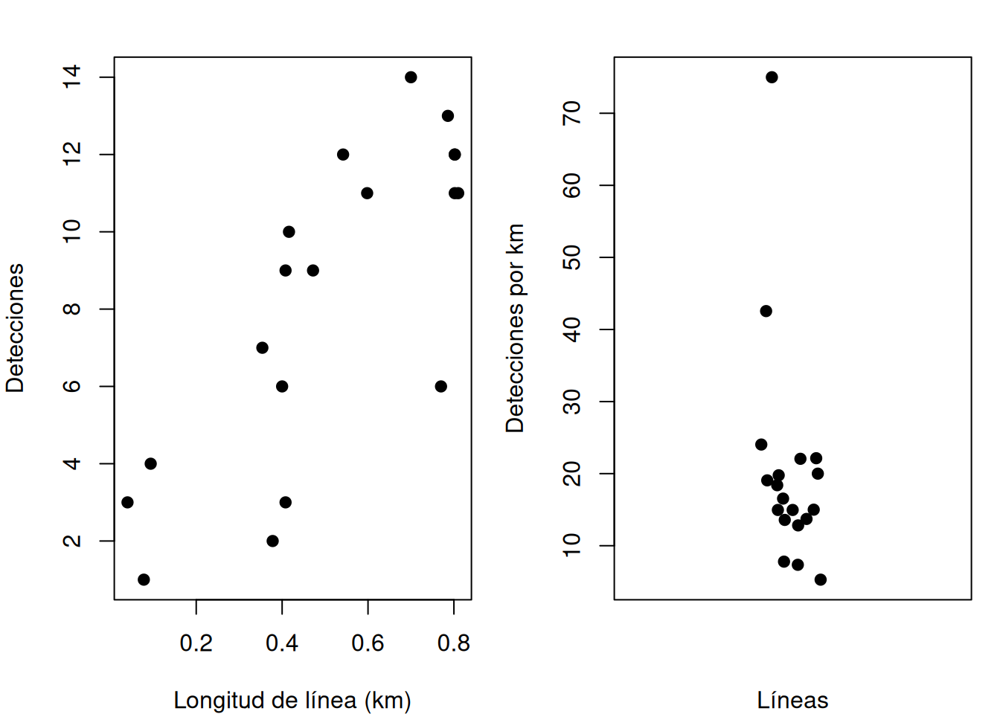
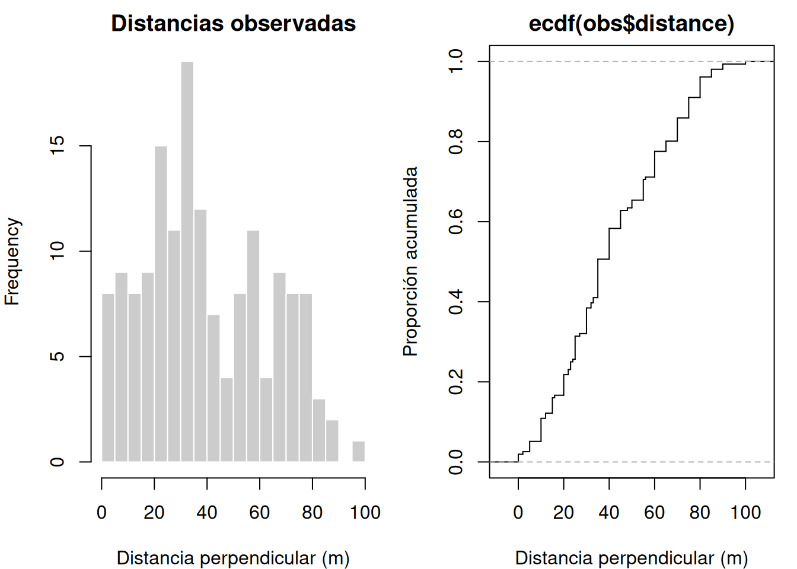
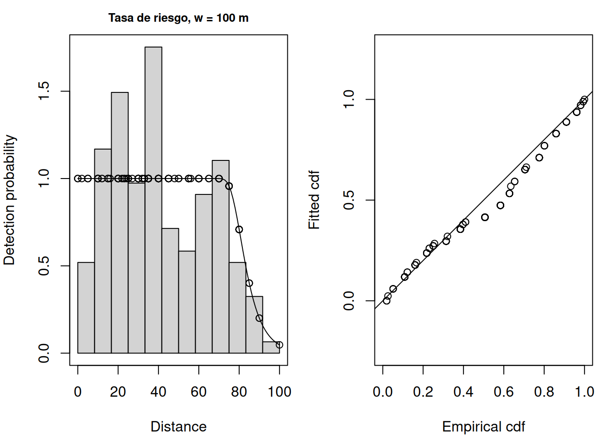
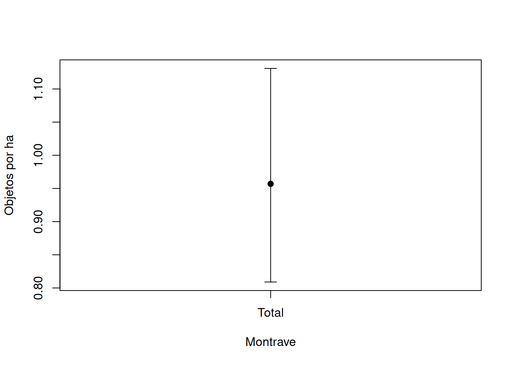
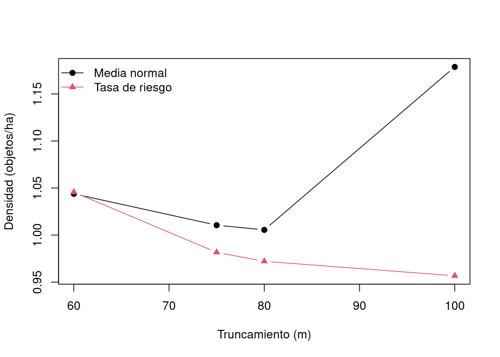

suppressPackageStartupMessages(library(Distance))
data(wren_lt, package = "Distance")
regiones <- unique(wren_lt[c("Region.Label", "Area", "Study.Area")])
lineas <- unique(wren_lt[c("Region.Label", "Sample.Label", "Effort")])
obs <- wren_lt[c("Region.Label", "Sample.Label", "object", "distance")]
encuentros <- aggregate(object ~ Region.Label + Sample.Label, obs, length)
names(encuentros)[3] <- "n"
lineas <- merge(lineas, encuentros,
by = c("Region.Label", "Sample.Label"), all.x = TRUE)
lineas$n[is.na(lineas$n)] <- 0
lineas$tasa <- lineas$n / lineas$Effort
data.frame(
regiones = nrow(regiones), lineas_documentadas = nrow(lineas),
detecciones = nrow(obs), objetos_duplicados = sum(duplicated(obs$object)),
distancias_faltantes = sum(is.na(obs$distance)),
distancias_negativas = sum(obs$distance < 0),
esfuerzo_no_positivo = sum(lineas$Effort <= 0),
lineas_con_cero = sum(lineas$n == 0)
)
#> regiones lineas_documentadas detecciones objetos_duplicados
#> 1 1 19 156 0
#> distancias_faltantes distancias_negativas esfuerzo_no_positivo
#> 1 0 0 0
#> lineas_con_cero
#> 1 04 Transectos y muestreo por distancias
4.1 Del encuentro a la densidad
El número observado combina distribución, esfuerzo y detección. Esta suele disminuir con distancia, vegetación, conducta y observador. El muestreo por distancias modela esa pérdida para estimar un área efectiva de búsqueda (Sutherland 2006; Henderson y Southwood 2016).
El diseño espacial determina dónde buscar; el proceso ecológico, dónde se encuentran los objetos; y el proceso de observación, cuáles se detectan. Una buena curva de detección no corrige líneas ubicadas solo en hábitat accesible.
4.2 Población, unidades y estimando
Un protocolo debe declarar población objetivo y disponible, región y período, unidad de muestreo, objeto detectado, esfuerzo y estimando. En transectos lineales, la línea o segmento es unidad de muestreo, y el individuo o grupo es unidad de observación.
La disponibilidad y la percepción son distintas. Un ave que no vocaliza puede no estar disponible; una que vocaliza puede no ser percibida. El modelo convencional supone detección segura sobre la línea, \(g(0)=1\). Si falla, la estimación describe objetos disponibles y perceptibles bajo el protocolo.
4.3 Geometría y función de detección
Para líneas de longitud total \(L\), truncadas a distancia perpendicular \(w\) a cada lado, el área geométrica es \(2wL\). Con función de detección \(g(x)\),
\[ P_a=\frac1w\int_0^w g(x)\,dx,\qquad \mu=\int_0^w g(x)\,dx, \]
y para \(n\) detecciones,
\[ \widehat D=\frac{n}{2wL\widehat P_a} =\frac{n}{2L\widehat\mu}. \]
\(2\mu\) es el ancho efectivo total. La corrección reemplaza área geométrica por área efectivamente cubierta; no crea objetos ni corrige un marco sesgado.
Dos funciones clave son media normal y tasa de riesgo:
\[ g_{HN}(x)=\exp\{-x^2/(2\sigma^2)\}, \]
\[ g_{HR}(x)=1-\exp\{-(x/\sigma)^{-b}\}. \]
La primera produce un hombro suave. La segunda puede sostener detección alta cerca de la línea y caer con mayor flexibilidad. Complejidad adicional requiere datos suficientes y una mejora diagnóstica, no solo un AIC menor.
4.4 Supuestos y fuentes de incertidumbre
- Las líneas representan la región respecto de los objetos.
- Los objetos sobre la línea se detectan: \(g(0)=1\).
- Se registran en su posición inicial.
- Las distancias perpendiculares se miden sin error importante.
- Cada objeto se registra una vez y se clasifica correctamente.
- Esfuerzo, área y unidades son compatibles.
- Las líneas aportan replicación de la tasa de encuentro.
El histograma y una prueba de ajuste examinan la distribución condicionada de distancias observadas. No verifican representatividad, movimiento ni \(g(0)=1\). La incertidumbre combina tasa de encuentro y función de detección. Remuestrear líneas conserva mejor la unidad de diseño que remuestrear detecciones.
4.5 Truncamiento y calidad de datos
Detecciones lejanas suelen ser escasas y difíciles de medir. Truncar puede estabilizar el ajuste, pero cambia \(n\), el área geométrica y \(P_a\). Deben declararse la regla y la sensibilidad. Acumulaciones en distancias preferidas pueden indicar redondeo; agrupar intervalos puede ser más honesto que tratar las medidas como exactas (Manly y Navarro Alberto 2015).
Las líneas sin detecciones deben conservarse. Excluirlas reduce esfuerzo sin reducir encuentros e infla la tasa. Igualmente, sumar Effort en cada fila de detección cuenta varias veces una misma línea.
4.6 Aplicación reproducible: chochín de Montrave
Distance::wren_lt contiene observaciones reales de chochín (Troglodytes troglodytes) recolectadas por Steve Buckland en bosque y parque de Montrave Estate, cerca de Leven, Fife, Escocia. Son datos de transecto lineal: esfuerzo en km, distancia perpendicular en m y área de 33.2 ha. El conjunto se distribuye con el paquete Distance (Miller et al. 2019).
La documentación no aporta fecha por registro, geometría de las líneas, covariables de observación, tamaño de grupo ni filas de transectos sin detección. Por ello el estimando será densidad de objetos detectables por hectárea en el área y protocolo representados, no densidad contemporánea de toda la especie.
4.6.1 Carga y auditoría de tablas
Los 19 identificadores de línea tienen encuentros. Esto puede significar que no hubo líneas con cero o que el archivo no las conserva; sin el registro de campo no se puede decidir. La inferencia de tasa de encuentro queda condicionada al esfuerzo documentado y esta limitación debe acompañarse al resultado.
4.6.2 Esfuerzo y tasa de encuentro
c(area_ha = unique(wren_lt$Area),
esfuerzo_km = sum(lineas$Effort),
detecciones = sum(lineas$n),
tasa_global_por_km = sum(lineas$n) / sum(lineas$Effort))
#> area_ha esfuerzo_km detecciones tasa_global_por_km
#> 33.20000 9.66000 156.00000 16.14907
op <- par(mfrow = c(1, 2), mar = c(4, 4, 2, 1))
plot(lineas$Effort, lineas$n, pch = 19,
xlab = "Longitud de línea (km)", ylab = "Detecciones")
stripchart(lineas$tasa, method = "jitter", vertical = TRUE, pch = 19,
ylab = "Detecciones por km", xlab = "Líneas")
par(op)
summary(lineas[c("Effort", "n", "tasa")])
#> Effort n tasa
#> Min. :0.0400 Min. : 1.000 Min. : 5.291
#> 1st Qu.:0.3890 1st Qu.: 5.000 1st Qu.:13.648
#> Median :0.4720 Median : 9.000 Median :16.539
#> Mean :0.5084 Mean : 8.211 Mean :20.265
#> 3rd Qu.:0.7780 3rd Qu.:11.500 3rd Qu.:21.029
#> Max. :0.8100 Max. :14.000 Max. :75.000La variación entre tasas muestra por qué 156 encuentros no equivalen a 156 réplicas. Las 19 líneas sostienen la variación de encuentro; las detecciones internas sostienen la forma de la función de detección.
4.6.3 Distribución y precisión de distancias
op <- par(mfrow = c(1, 2), mar = c(4, 4, 2, 1))
hist(obs$distance, breaks = seq(0, 100, by = 5),
col = "grey80", border = "white",
xlab = "Distancia perpendicular (m)", main = "Distancias observadas")
plot(ecdf(obs$distance), verticals = TRUE, do.points = FALSE,
xlab = "Distancia perpendicular (m)", ylab = "Proporción acumulada")
par(op)
sort(table(obs$distance), decreasing = TRUE)[1:10]
#>
#> 35 40 30 60 10 25 70 20 55 75
#> 15 12 10 10 9 9 9 8 8 8
c(minimo = min(obs$distance), maximo = max(obs$distance),
multiplos_de_5 = mean(obs$distance %% 5 == 0))
#> minimo maximo multiplos_de_5
#> 0.0000000 100.0000000 0.8910256La acumulación en múltiplos de cinco sugiere redondeo. La disminución hacia el límite superior aporta información sobre detección, pero también hace sensibles los modelos al truncamiento.
4.6.4 Modelos candidatos con unidades compatibles
Usamos inicialmente \(w=100\) m para conservar las 156 detecciones. Como esfuerzo está en km y área en ha, convert_units = 0.1 convierte el producto m por km a hectáreas. Comparamos media normal y tasa de riesgo sin ajustes adicionales.
ajustar <- function(w, key) {
Distance::ds(wren_lt, truncation = w, key = key,
adjustment = NULL, convert_units = 0.1, quiet = TRUE)
}
modelos <- list(
`Media normal` = ajustar(100, "hn"),
`Tasa de riesgo` = ajustar(100, "hr")
)
#> Fitting half-normal key function
#> AIC= 1418.188
#> Fitting hazard-rate key function
#> AIC= 1412.133
tabla_modelos <- do.call(rbind, lapply(names(modelos), function(nombre) {
fit <- modelos[[nombre]]
sm <- summary(fit$ddf)
data.frame(modelo = nombre, n = sm$n,
parametros = length(fit$ddf$par),
AIC = fit$ddf$criterion,
p_deteccion = sm$average.p,
densidad_ha = fit$dht$individuals$D$Estimate[1])
}))
tabla_modelos[-1] <- lapply(tabla_modelos[-1], round, 4)
tabla_modelos
#> modelo n parametros AIC p_deteccion densidad_ha
#> 1 Media normal 156 1 1418.188 0.685 1.1787
#> 2 Tasa de riesgo 156 2 1412.133 0.844 0.9567Con el mismo truncamiento, el AIC compara ajuste y complejidad. La tasa de riesgo es defendible si mejora claramente el criterio, conserva monotonicidad y supera los diagnósticos. La diferencia en probabilidad media muestra que la forma de la curva tiene una consecuencia directa sobre densidad.
4.6.5 Diagnósticos del modelo elegido
fit_final <- modelos[["Tasa de riesgo"]]
gof <- Distance::gof_ds(fit_final, plot = FALSE)
c(CvM = gof$dsgof$CvM$W, p_CvM = gof$dsgof$CvM$p,
p_deteccion = summary(fit_final$ddf)$average.p)
#> CvM p_CvM p_deteccion
#> 0.2498974 0.1885013 0.8440264
op <- par(mfrow = c(1, 2), mar = c(4, 4, 2, 1))
plot(fit_final, pdf = TRUE, main = "Tasa de riesgo, w = 100 m")
#> Warning in plot.ds(x$ddf, pl.den = pl.den, ...): Ignoring pdf=TRUE for line
#> transect data
Distance::gof_ds(fit_final, plot = TRUE)
#>
#> Goodness of fit results for ddf object
#>
#> Distance sampling Cramer-von Mises test (unweighted)
#> Test statistic = 0.249897 p-value = 0.188501
par(op)La curva debe tener hombro cerca de cero y descenso monótono. Cramer–von Mises evalúa compatibilidad acumulada entre distancias y modelo. Un resultado no extremo apoya la forma elegida, pero no verifica selección espacial, \(g(0)=1\), movimiento ni exactitud de las distancias.
4.6.6 Densidad, abundancia e incertidumbre
estimacion <- merge(
fit_final$dht$individuals$D[c("Label", "Estimate", "se", "cv", "lcl", "ucl")],
fit_final$dht$individuals$N[c("Label", "Estimate", "se", "cv", "lcl", "ucl")],
by = "Label", suffixes = c("_D", "_N")
)
estimacion[-1] <- lapply(estimacion[-1], round, 3)
estimacion
#> Label Estimate_D se_D cv_D lcl_D ucl_D Estimate_N se_N cv_N lcl_N ucl_N
#> 1 Total 0.957 0.078 0.081 0.809 1.131 31.761 2.584 0.081 26.857 37.562
with(estimacion, {
plot(1, Estimate_D, pch = 19, xaxt = "n",
ylim = c(lcl_D, ucl_D), xlab = "Montrave", ylab = "Objetos por ha")
axis(1, 1, Label)
arrows(1, lcl_D, 1, ucl_D, angle = 90, code = 3, length = 0.08)
})
D expresa objetos detectables por hectárea y N los expande a 33.2 ha. El intervalo incorpora variación estimada de encuentros y detección bajo las 19 líneas documentadas. Sin tamaño de grupo, disponibilidad o líneas ausentes, no debe reinterpretarse como número total de aves presentes.
4.6.7 Diagnóstico de líneas influyentes
Una línea corta con muchos encuentros puede dominar la tasa. Comparamos la tasa global al retirar una línea por vez; es un diagnóstico, no un método para excluir resultados incómodos.
tasa_loo <- vapply(seq_len(nrow(lineas)), function(i)
sum(lineas$n[-i]) / sum(lineas$Effort[-i]), 0.0)
influencia <- data.frame(
linea_retirada = lineas$Sample.Label,
esfuerzo = lineas$Effort,
encuentros = lineas$n,
tasa_sin_linea = tasa_loo,
cambio = tasa_loo - sum(lineas$n) / sum(lineas$Effort)
)
influencia[order(abs(influencia$cambio), decreasing = TRUE), ][1:5, ]
#> linea_retirada esfuerzo encuentros tasa_sin_linea cambio
#> 19 9 0.770 6 16.87289 0.7238226
#> 8 16 0.378 2 16.59125 0.4421836
#> 2 10 0.408 3 16.53696 0.3878967
#> 6 14 0.542 12 15.79294 -0.3561313
#> 1 1 0.416 10 15.79403 -0.3550398Cambios grandes identifican recorridos que merecen revisar en bitácoras. No son evidencia automática de error: también pueden reflejar heterogeneidad ecológica real.
4.6.8 Sensibilidad a función y truncamiento
w_grid <- c(60, 75, 80, 100)
sensibilidad <- do.call(rbind, lapply(w_grid, function(w) {
do.call(rbind, lapply(c(HN = "hn", HR = "hr"), function(key) {
fit <- ajustar(w, key)
sm <- summary(fit$ddf)
data.frame(w = w, clave = key, n = sm$n,
descartadas = nrow(obs) - sm$n,
AIC = fit$ddf$criterion, p_deteccion = sm$average.p,
D = fit$dht$individuals$D$Estimate[1],
N = fit$dht$individuals$N$Estimate[1])
}))
}))
#> Fitting half-normal key function
#> AIC= 992.831
#> Fitting hazard-rate key function
#> AIC= 994.425
#> Fitting half-normal key function
#> AIC= 1228.059
#> Fitting hazard-rate key function
#> AIC= 1229.689
#> Fitting half-normal key function
#> AIC= 1316.455
#> Fitting hazard-rate key function
#> AIC= 1318.104
#> Fitting half-normal key function
#> AIC= 1418.188
#> Fitting hazard-rate key function
#> AIC= 1412.133
sensibilidad[-2] <- lapply(sensibilidad[-2], round, 4)
sensibilidad
#> w clave n descartadas AIC p_deteccion D N
#> HN 60 hn 121 35 992.8314 1.0000 1.0438 34.6549
#> HR 60 hr 121 35 994.4247 0.9983 1.0456 34.7132
#> HN1 75 hn 142 14 1228.0585 0.9698 1.0105 33.5482
#> HR1 75 hr 142 14 1229.6894 0.9983 0.9816 32.5903
#> HN2 80 hn 150 6 1316.4553 0.9652 1.0055 33.3819
#> HR2 80 hr 150 6 1318.1039 0.9983 0.9721 32.2747
#> HN3 100 hn 156 0 1418.1879 0.6850 1.1787 39.1329
#> HR3 100 hr 156 0 1412.1329 0.8440 0.9567 31.7614
matplot(w_grid,
cbind(sensibilidad$D[sensibilidad$clave == "hn"],
sensibilidad$D[sensibilidad$clave == "hr"]),
type = "b", pch = c(19, 17), lty = 1,
xlab = "Truncamiento (m)", ylab = "Densidad (objetos/ha)")
legend("topleft", c("Media normal", "Tasa de riesgo"),
pch = c(19, 17), lty = 1, col = 1:2, bty = "n")
Los AIC solo se comparan entre funciones dentro del mismo \(w\), pues cambia el conjunto de observaciones. Truncamientos bajos eliminan la cola donde se aprecia la caída y pueden estimar detección casi perfecta; el análisis completo muestra que esa conclusión depende de ocultar las detecciones lejanas. La estabilidad de la densidad dentro de decisiones plausibles es tan importante como el mínimo AIC.
4.6.9 Sensibilidad a líneas no documentadas con cero
No sabemos si faltan ceros. El siguiente cálculo no inventa observaciones primarias: muestra algebraicamente cuánto cambiaría la tasa si el registro hubiera omitido líneas de esfuerzo mediano sin detecciones.
esfuerzo_mediano <- median(lineas$Effort)
ceros_posibles <- 0:5
tasa_ceros <- data.frame(
lineas_cero_adicionales = ceros_posibles,
tasa_por_km = sum(lineas$n) /
(sum(lineas$Effort) + ceros_posibles * esfuerzo_mediano)
)
tasa_ceros$razon_frente_observada <-
tasa_ceros$tasa_por_km / tasa_ceros$tasa_por_km[1]
round(tasa_ceros, 3)
#> lineas_cero_adicionales tasa_por_km razon_frente_observada
#> 1 0 16.149 1.000
#> 2 1 15.397 0.953
#> 3 2 14.711 0.911
#> 4 3 14.085 0.872
#> 5 4 13.509 0.837
#> 6 5 12.978 0.804Como la densidad es proporcional a la tasa si la función de detección se mantiene, líneas omitidas reducirían densidad en la misma razón. Este escenario no afirma que existan; cuantifica una limitación de procedencia que el ajuste no puede resolver.
4.7 Interpretación y reproducibilidad
El modelo de tasa de riesgo con \(w=100\) m usa todas las detecciones y representa mejor la caída en la cola que la media normal según el criterio y diagnósticos. La conclusión se limita a objetos detectables y al esfuerzo documentado. El redondeo, la ausencia de covariables, la imposibilidad de confirmar líneas con cero y los supuestos \(g(0)=1\) y posición inicial son fuentes de incertidumbre no incluidas en el intervalo.
list(
archivo = "Distance::wren_lt",
version_Distance = as.character(packageVersion("Distance")),
version_R = R.version.string,
objeto = "detección de chochín",
area_ha = unique(wren_lt$Area),
esfuerzo_km = sum(lineas$Effort),
truncamiento_m = 100,
funcion = "tasa de riesgo sin ajustes",
conversion_m_km_a_ha = 0.1
)
#> $archivo
#> [1] "Distance::wren_lt"
#>
#> $version_Distance
#> [1] "2.0.1"
#>
#> $version_R
#> [1] "R version 4.5.2 (2025-10-31)"
#>
#> $objeto
#> [1] "detección de chochín"
#>
#> $area_ha
#> [1] 33.2
#>
#> $esfuerzo_km
#> [1] 9.66
#>
#> $truncamiento_m
#> [1] 100
#>
#> $funcion
#> [1] "tasa de riesgo sin ajustes"
#>
#> $conversion_m_km_a_ha
#> [1] 0.1
sessionInfo()
#> R version 4.5.2 (2025-10-31)
#> Platform: x86_64-pc-linux-gnu
#> Running under: Ubuntu 24.04.4 LTS
#>
#> Matrix products: default
#> BLAS: /usr/lib/x86_64-linux-gnu/openblas-pthread/libblas.so.3
#> LAPACK: /usr/lib/x86_64-linux-gnu/openblas-pthread/libopenblasp-r0.3.26.so; LAPACK version 3.12.0
#>
#> locale:
#> [1] LC_CTYPE=C.UTF-8 LC_NUMERIC=C LC_TIME=C.UTF-8
#> [4] LC_COLLATE=C.UTF-8 LC_MONETARY=C.UTF-8 LC_MESSAGES=C.UTF-8
#> [7] LC_PAPER=C.UTF-8 LC_NAME=C LC_ADDRESS=C
#> [10] LC_TELEPHONE=C LC_MEASUREMENT=C.UTF-8 LC_IDENTIFICATION=C
#>
#> time zone: UTC
#> tzcode source: system (glibc)
#>
#> attached base packages:
#> [1] stats graphics grDevices datasets utils methods base
#>
#> other attached packages:
#> [1] Distance_2.0.1 mrds_3.0.1
#>
#> loaded via a namespace (and not attached):
#> [1] Matrix_1.7-4 future.apply_1.20.2 jsonlite_2.0.0
#> [4] dplyr_1.2.1 compiler_4.5.2 renv_1.2.4
#> [7] tidyselect_1.2.1 Rcpp_1.1.2 parallel_4.5.2
#> [10] Rsolnp_2.0.1 globals_0.19.1 splines_4.5.2
#> [13] yaml_2.3.12 fastmap_1.2.0 lattice_0.22-7
#> [16] R6_2.6.1 generics_0.1.4 knitr_1.51
#> [19] rbibutils_2.4.1 tibble_3.3.1 future_1.75.0
#> [22] nloptr_2.2.1 pillar_1.11.1 rlang_1.1.7
#> [25] xfun_0.56 truncnorm_1.0-9 cli_3.6.5
#> [28] magrittr_2.0.5 mgcv_1.9-3 Rdpack_2.6.6
#> [31] digest_0.6.39 grid_4.5.2 lifecycle_1.0.5
#> [34] nlme_3.1-168 vctrs_0.7.1 evaluate_1.0.5
#> [37] pracma_2.4.6 glue_1.8.0 numDeriv_2016.8-1.1
#> [40] listenv_1.0.0 codetools_0.2-20 optimx_2025-4.9
#> [43] parallelly_1.48.0 rmarkdown_2.30 pkgconfig_2.0.3
#> [46] tools_4.5.2 htmltools_0.5.94.8 Actividad propuesta para el lector
Use el conjunto real Distance::amakihi para construir un análisis de muestreo por distancias. Documente especie, lugar, unidades y limitaciones desde la ayuda del paquete; reconstruya tablas de región, muestra y detección; audite esfuerzo, ceros, duplicados, faltantes, rangos y redondeo; defina población disponible, unidad y estimando; explore tasas y distancias; ajuste dos funciones clave con truncamientos justificados; compare AIC solo sobre los mismos datos; revise curva, residuos cuantiles y ajuste acumulado; estime densidad, abundancia e intervalos; identifique unidades influyentes; y evalúe sensibilidad a truncamiento, función y posible omisión de esfuerzo sin encuentros. Interprete qué supuestos pueden examinarse con el archivo, cuáles dependen del protocolo y qué información adicional sería necesaria para hablar de individuos totales.